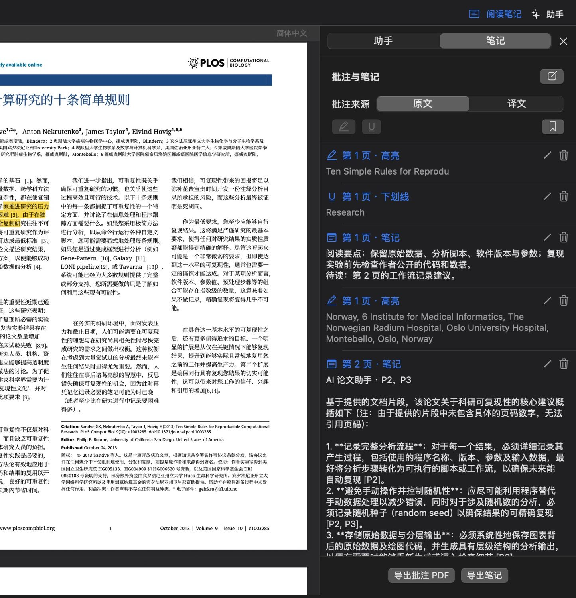
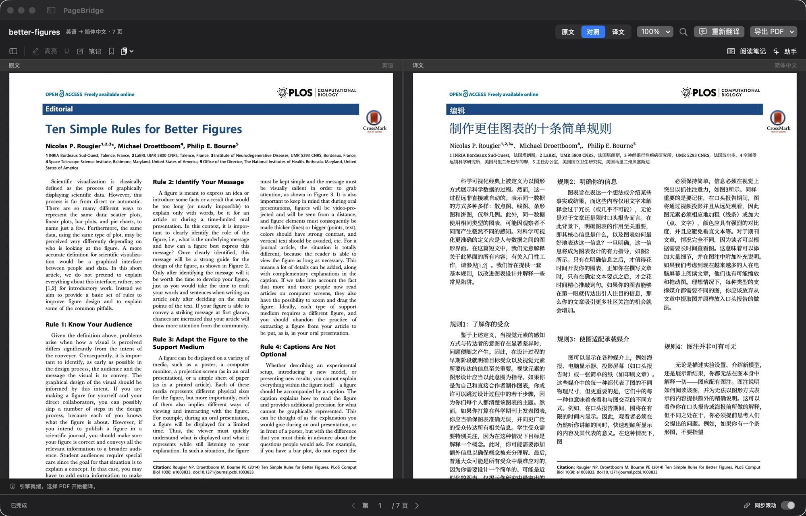
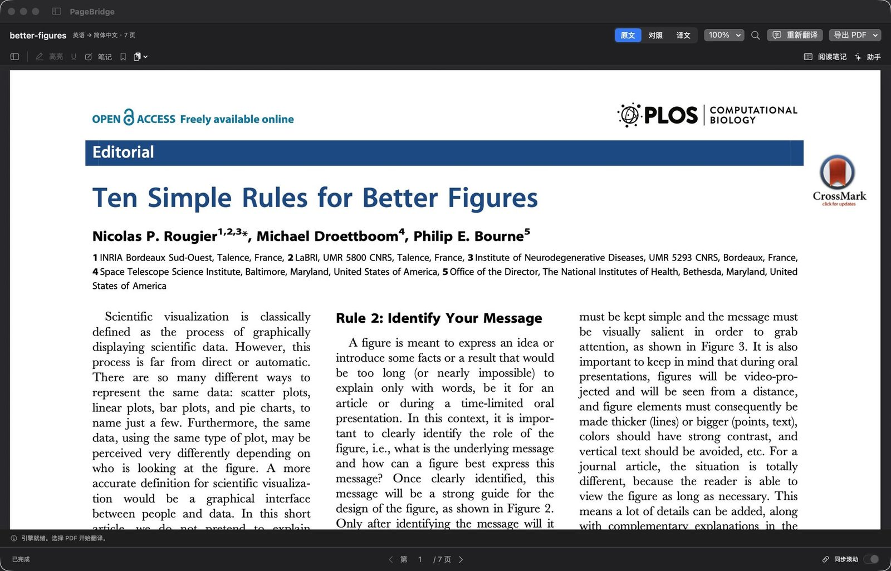
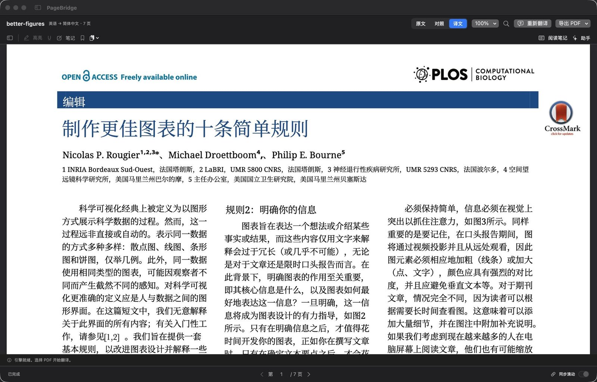
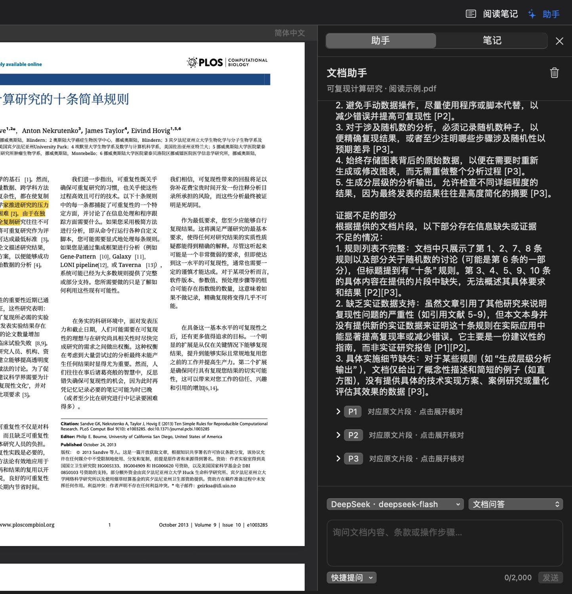
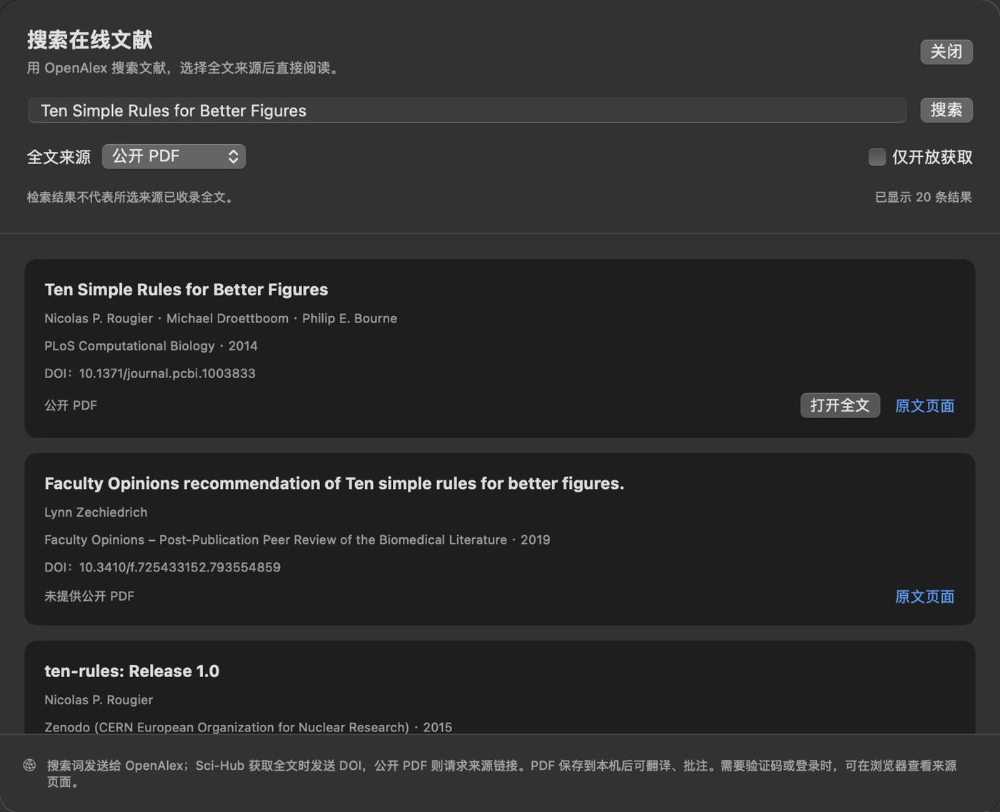
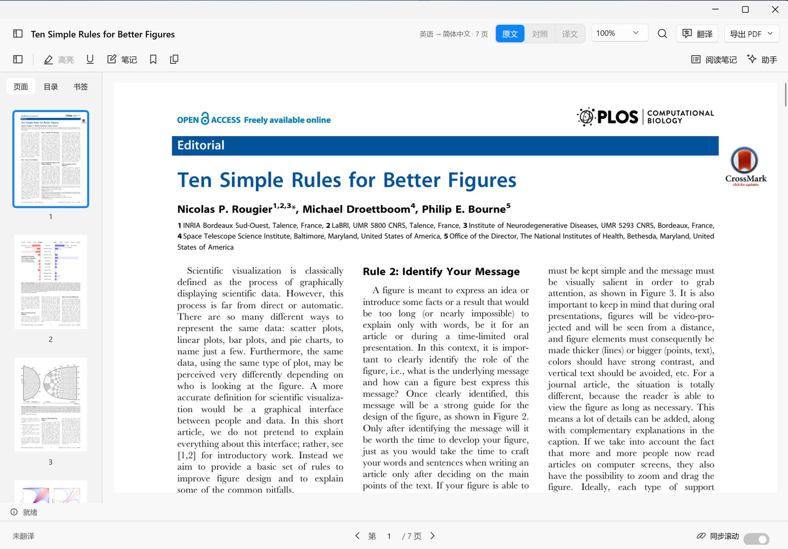

批注与笔记
选中文字即可高亮、加下划线或写笔记，也可以给当前页加笔记和书签。笔记面板按页列出所有批注，点一下回到原处。
- 原文和译文的批注分开保存，添加前可选择来源
- 批注绑定 PDF 的哈希，重新翻译不会让旧批注错位
- 导出带批注的 PDF，或带页码和摘录的 Markdown 笔记

v0.4.0 2026-10-25 发布 macOS 14+ 与 Windows 11
PageBridge 是 Mac 与 Windows 原生的 PDF 阅读工作区。整篇或按页翻译，图表、公式和版面留在原位；对照阅读时可以同步滚动、批注，也可以向文档助手提问。翻译用你自己的模型：本机 Ollama 或 OpenAI 兼容 API。



拖入 PDF 或点击 + 导入；也可以按标题、关键词或 DOI 检索 OpenAlex，下载全文后直接打开。
选择目标语言和页码，例如 1-5, 8。任务可随时取消，失败或取消都不会覆盖上次成功的译文。
在原文、对照、译文间切换，同步滚动、文内搜索，用缩略图、目录和书签定位，边读边批注或提问。
导出原文、译文或原译逐页交替的双语 PDF；批注另存为批注 PDF 或 Markdown 笔记。
批注、提问和找文献都在同一个窗口里完成，不用在阅读器、翻译网站和笔记软件之间来回切换。
选中文字即可高亮、加下划线或写笔记，也可以给当前页加笔记和书签。笔记面板按页列出所有批注，点一下回到原处。

在阅读时向文档提问，助手使用你已配置的模型，可以和翻译用不同的模型。回答里的 [P3] 引用能展开，核对当次实际交给模型的原文片段，并跳回对应页面。
助手每次只看到有限的片段，不代表模型通读了全文；引用只说明该页片段被提供过，结论仍需对照原文。

用标题、关键词或 DOI 检索 OpenAlex，选择全文来源后直接下载到文档库。下载会先校验文件；与库里已有的文档相同时，直接打开原来那份，保留译文和笔记。

两个版本共用同一套翻译引擎，界面分别用各自平台的原生框架编写，功能基本一致。
两端文档库格式不同，暂不支持直接互拷数据目录或跨平台同步。尚无 Intel Mac 和原生 Windows ARM64 版本。
Windows 版功能与已知差异
文档解析与排版都在本机完成。只有你调用在线服务时，相应的内容才会发出去。
安装包自带 Python 和翻译引擎，无需另装 Python；首次翻译可能还会下载字体和版面资源。
适合这台设备
解压后把 PageBridge.app 拖入“应用程序”。需要 macOS 14 或更新。
适合这台设备
按向导选择目录和快捷方式，默认装到当前用户目录。卸载会保留文档库、配置和系统凭据。
适合这台设备
完整解压后运行 PageBridge.Windows.exe，保留所有子目录。应用内更新会启动安装向导，不会就地替换便携目录。
Mac 包目前为 ad-hoc 签名，尚未经过 Developer ID 签名和 Apple 公证；Windows 安装器和程序尚无 Authenticode 签名。请核对下载来源和 SHA-256，再按系统提示确认打开。Windows 应用内的网页验证需要系统 WebView2 Runtime。
PageBridge 的原创代码采用 AGPL-3.0-only。翻译基于 PDFMathTranslate-next 与 BabelDOC，第三方组件保留各自的许可。每个发行版都附有项目源码和第三方对应源码。